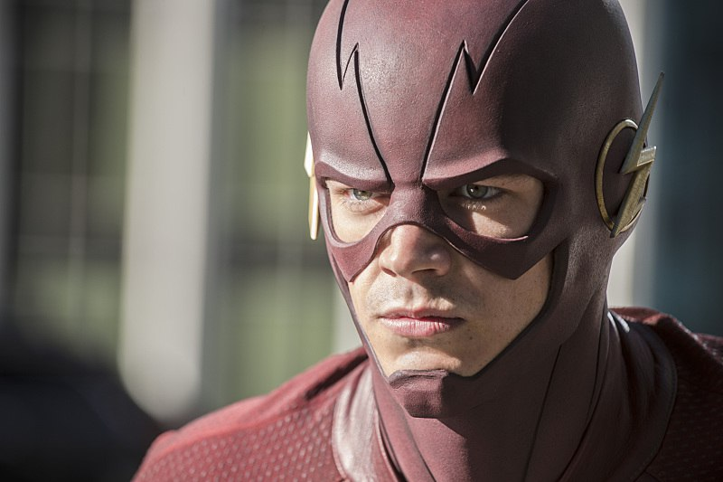
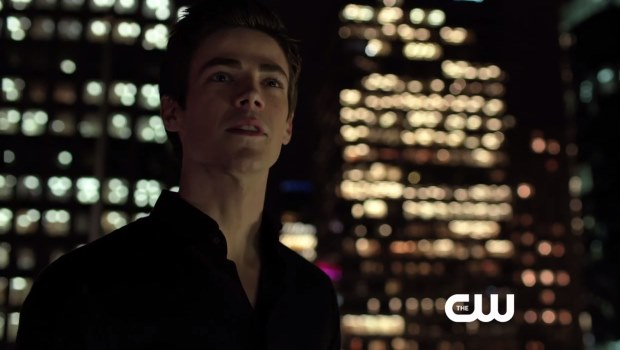
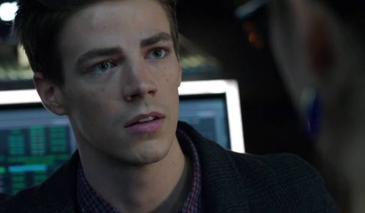

Заголовок
Слоган
Флэш
Недавно Барри Ален был простым парнем, который работал судмедэкспертом в полицейском департаменте, но его жизнь навсегда изменилась после аварии в научной лаборатории. Герой, оказавшись в самом эпицентре событий, обрёл невероятную силу – нечеловеческую скорость. Барри способен разгоняться до скорости света, и вскоре он решил использовать свои способности во благо и стал настоящим супергероем своего родного города Централ-Сити. Ему и его верным помощникам пришлось столкнуться не только с обычными преступниками, но и злодеями, обладающими различными суперспособностями. Несмотря на могущественных врагов, Флэш всегда выходит победителем из любых противостояний.
 После победы над Зумом и спасением всех миров, Барри создал свою реальность, в которой его родители остались живы. Герой безумно рад своей новой жизни, ведь в ней есть всё, о чём он только мечтал, а Обратный Флэш находится в заточении. В новом мире Барри внимательно следит за противостоянием Кид Флэша и конкурента, ходит на свидания с Айрис и продолжает работать в полицейском департаменте. Но спокойная жизнь заканчивается в тот момент, когда герой осознаёт, что созданный им мир влияет на него куда сильнее, чем он только мог себе представить.
После победы над Зумом и спасением всех миров, Барри создал свою реальность, в которой его родители остались живы. Герой безумно рад своей новой жизни, ведь в ней есть всё, о чём он только мечтал, а Обратный Флэш находится в заточении. В новом мире Барри внимательно следит за противостоянием Кид Флэша и конкурента, ходит на свидания с Айрис и продолжает работать в полицейском департаменте. Но спокойная жизнь заканчивается в тот момент, когда герой осознаёт, что созданный им мир влияет на него куда сильнее, чем он только мог себе представить.
  
ТрейлерПостер
Шерлок
Флэш
Легенды завтрашнего дня
Форс-мажоры
Крик